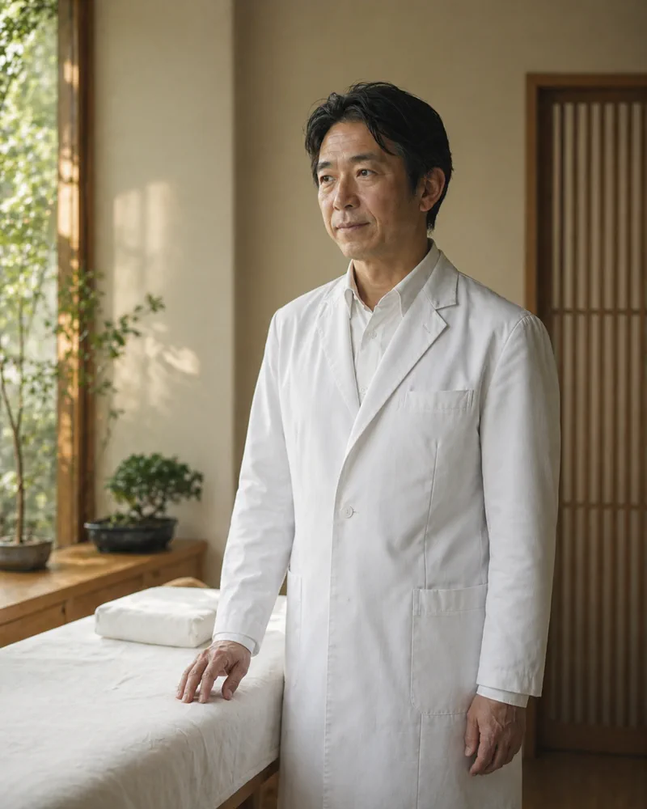

院長紹介
Director院長の青木健二です。検査に映らない不調と、15年向き合ってきました。どのような考えで施術を組み立てているのか、これまでに何をしてきたのかを、このページにまとめています。

あなたが悪いのでは
ない、と伝えたかった。A Letter from the Director
はじめまして。あおき鍼灸整体院の青木と申します。
私のもとには、いくつもの病院を巡って「異常なし」と言われた方がいらっしゃいます。検査では何も出ない。けれど、明らかに体は辛い。その状態が続くと、いつしか「自分が弱いせいかもしれない」と思い込んでしまう方も少なくありません。
違います。検査で映らないだけで、自律神経は確かに悲鳴を上げています。私は臨床の15年で、その「映らない不調」と向き合い続けてきました。
このページで、まず私の考えとアプローチをお読みください。納得していただけたなら、その先で一度お会いできれば、と思います。
あおき鍼灸整体院 院長 青木 健二
3つの約束Our Promises
初めてお会いする方にも、長く通ってくださる方にも、変わらずお守りしていることが三つあります。
-
マニュアル化しない施術
同じ症状でも、原因は人それぞれです。問診と脈診で、その日のあなたの状態に合わせた施術を組み立てます。
-
痛みのない、やさしい鍼
髪の毛より細い鍼を使い、刺入時の痛みを最小限に抑えます。「鍼が初めて」という方でも安心して受けていただけます。
-
通院ペースの押し付けはしません
「週3回来てください」のような強制はしません。あなたの体の反応を見ながら、最適な間隔をご相談します。
臨床15年。
三つの国家資格と、
一つの願い。Director Profile
- 氏名
- 青木 健二（あおき けんじ）
- 資格
- 国家資格3つ保有
はり師／きゅう師／あん摩マッサージ指圧師
- 臨床年数
- 15年（2011年〜）
経歴
- 2010年
- ○○鍼灸専門学校卒業（はり師・きゅう師取得）
- 2011年
- あん摩マッサージ指圧師取得
- 2011年〜
- 都内の鍼灸院にて臨床経験
- 2017年
- あおき鍼灸院 開業
- 2026年
- あおき鍼灸整体院として再出発
院長 青木 健二
臨床15年・国家資格3つ保有
保有資格License
- はり師（国家資格）
- きゅう師（国家資格）
- あん摩マッサージ指圧師（国家資格）
施術は院長が担当いたします。担当者のご希望がある場合は、ご予約時にご相談ください。